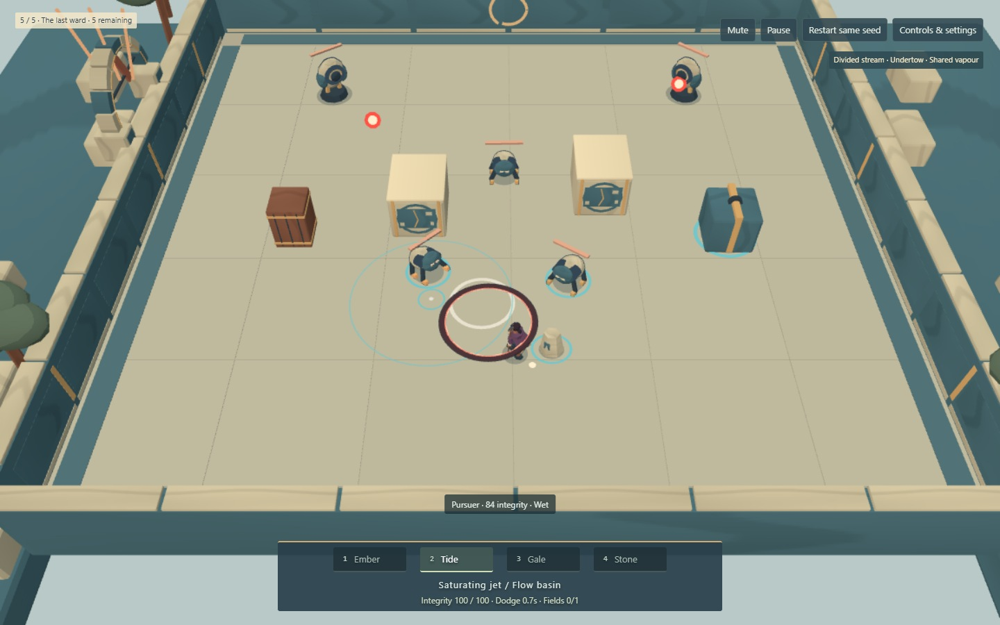
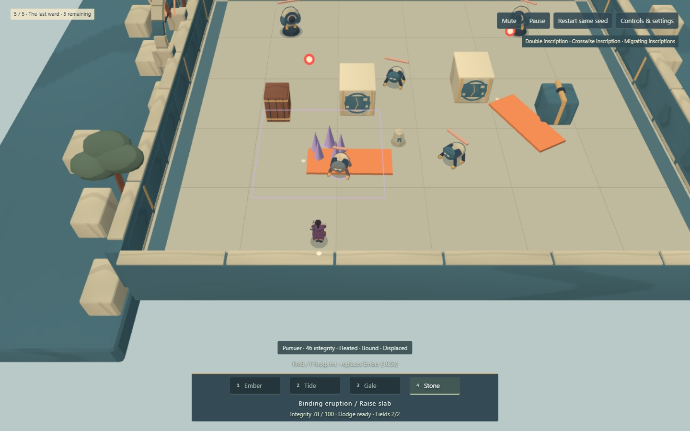
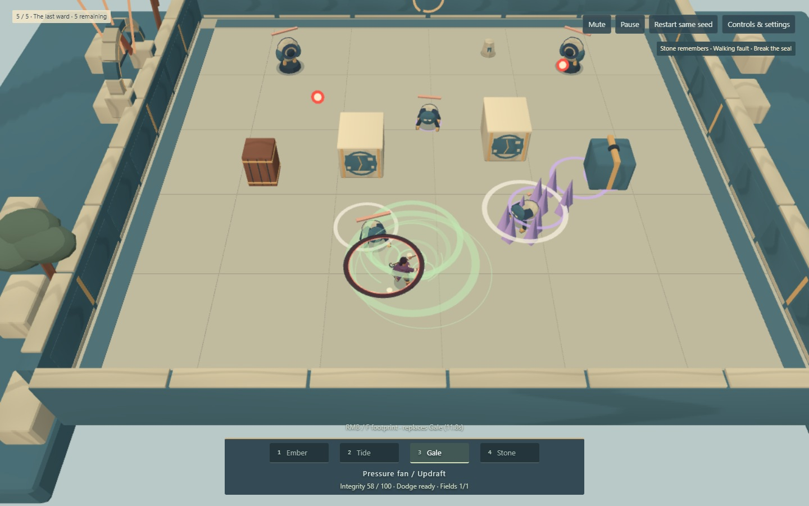

One mage, three builds
Play the Broken Court solo or together
Same five rooms, enemies, health rules and base spells. Three personal choices after courts 1, 3 and 4. These are actual normal-health, active-enemy runs driven through keyboard, mouse and reward cards. No concept images or fake preview simulation.
Structure offers the clearest measured payoff. Field control trades completion speed for repositioning and safety in some cases. Shared vapour remains the least certain marginal payoff. These scripts are transparent sensitivity tests, not models of human skill or proof of balance.
Gather and transform
Divided stream / Undertow / Shared vapour

85.1 seconds of combat across the whole run. Seed 143; seed changes offers, not this encounter.Move the battlefield
Double inscription / Crosswise inscription / Migrating inscriptions

71.1 seconds of combat across the whole run. Seed 0; seed changes offers, not this encounter.Prepare and release
Stone remembers / Walking fault / Break the seal

71.8 seconds of combat across the whole run. Seed 0; seed changes offers, not this encounter.Runtime 84df97b00092. Installed headless Chrome 152 / Intel UHD ANGLE D3D11, 1440x900 viewport, Lightweight 1152x720 drawing buffer on one Windows computer. Recording adds overhead; frame/transport measurements were taken separately. Co-op was also exercised through two local WebRTC clients; this is not a remote-laptop relay test.
WASD move; pointer aim; LMB/J Primary; RMB/F/K Secondary; 1-4 or Tab/Q select; Space dodge; E continue/revive. Controls & settings includes your build and device-local rendering quality.